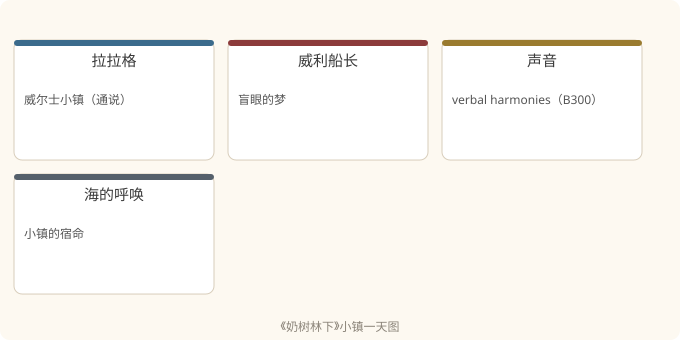

奶树林下
一、基本信息
| 作者 | 狄兰·托马斯 |
|---|---|
| 成书/出版 | 1953年纽约诗歌中心演出、1954年BBC播出（Britannica：presented at the Poetry Center in New York City in 1953, and its final version was broadcast by the BBC in 1954） Dylan Thomas — Encyclopaedia Britannica（百科全书） |
| 国别/地区 | 英国 |
| 时代 | 现当代 · 20世纪 |
| 体裁 | 广播剧（播音剧） |
| 语言 | 英语 |

《奶树林下》小镇一天图（主题·结构图）
二、创作背景
Britannica（B300）：'This play, which evokes the lives of the inhabitants of a small Welsh town, shows Thomas's full powers as an artist in comedy.'（威尔士小镇居民的生活——喜剧艺术的全盛）。
文体（B300 语境）：'verbal harmonies that are unique in English poetry'（英语诗歌中独一无二的语音和谐——B300）。
'His work……owed more to his Welsh background than to the prevailing taste in English literature'（B300）。
三、内容脉络
拉拉格小镇的一天：船长、织袜女与'海的呼唤'（通说待核）。
四、主要人物表
| 人物 | 身份 | 说明 |
|---|---|---|
| 威利船长 | 盲眼老船长 | （通说待核） |
| 波利·盖特? | 织袜女 | （通说待核） |
五、主题与艺术特点
- 小镇的一天：梦与醒（通说待核）。
- '海的呼唤'（通说待核）。
- 广播剧的声音艺术（通说）。
六、影响与评论
- Britannica：'shows Thomas's full powers as an artist in comedy'（B300）。
Dylan Thomas — Encyclopaedia Britannica（百科全书） - 作者页：'verbal harmonies……unique in English poetry'（B300 作者级定位）。
Dylan Thomas — Encyclopaedia Britannica（百科全书）
七、阅读建议
难点
- 威尔士小镇名（Llareggub——倒拼说）。
- 纯声音的想象。
- 《奶树林下》（收于狄兰·托马斯作品集，通说待核）。
- 英文原版（Dent）。
先读诗后听剧。
八、待核实
- 小镇名 Llareggub（'bugger all'倒拼——通说待核）核对。
- 威利船长/波利人名核对。
- BBC 1954年首播说核对（B300 已载）。
本页主要来源
狄兰·托马斯的其他收录作品：奶树林下